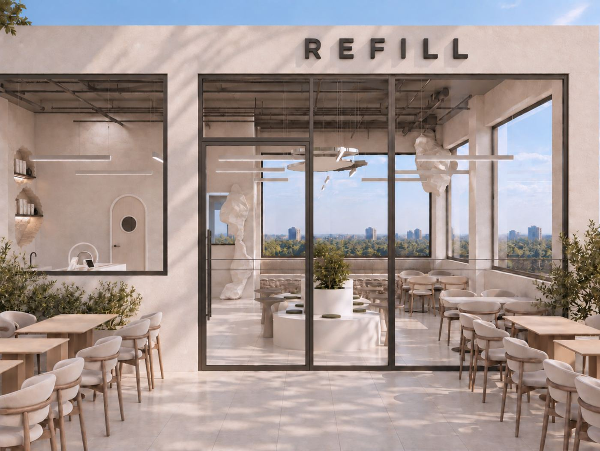
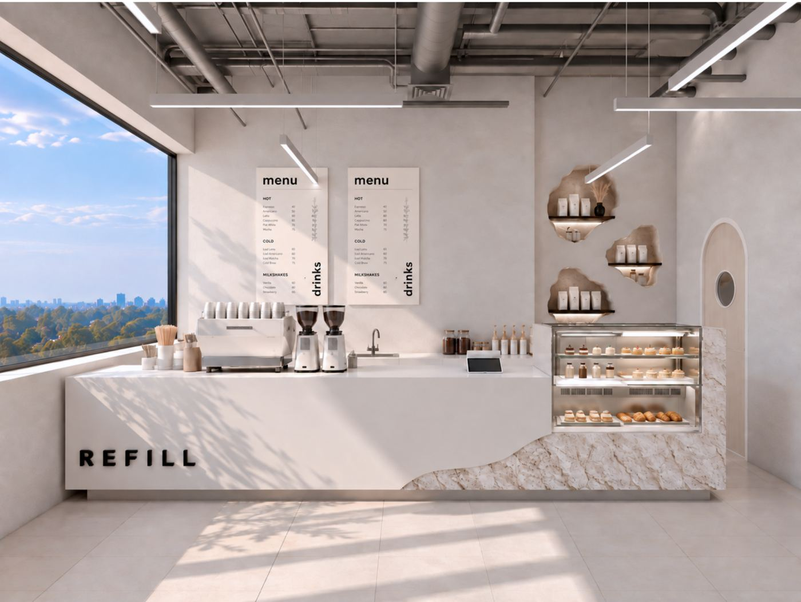
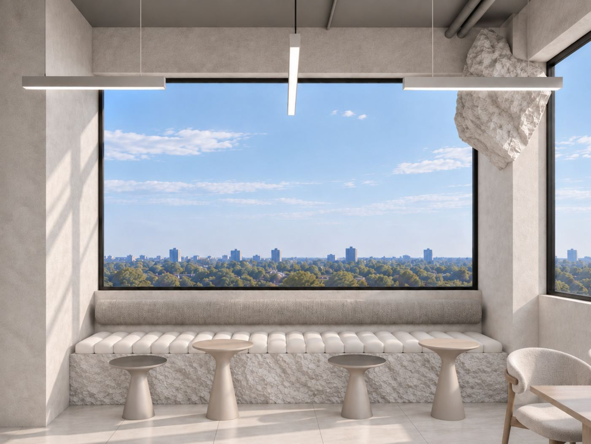
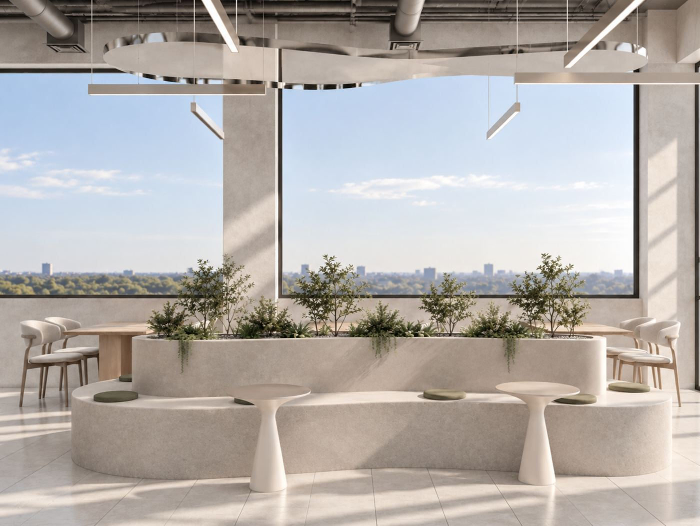
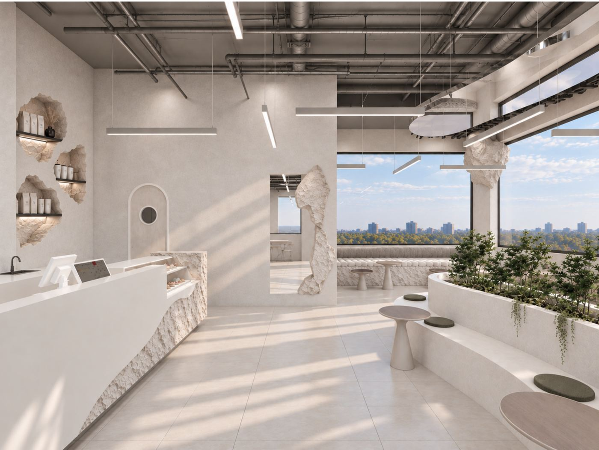
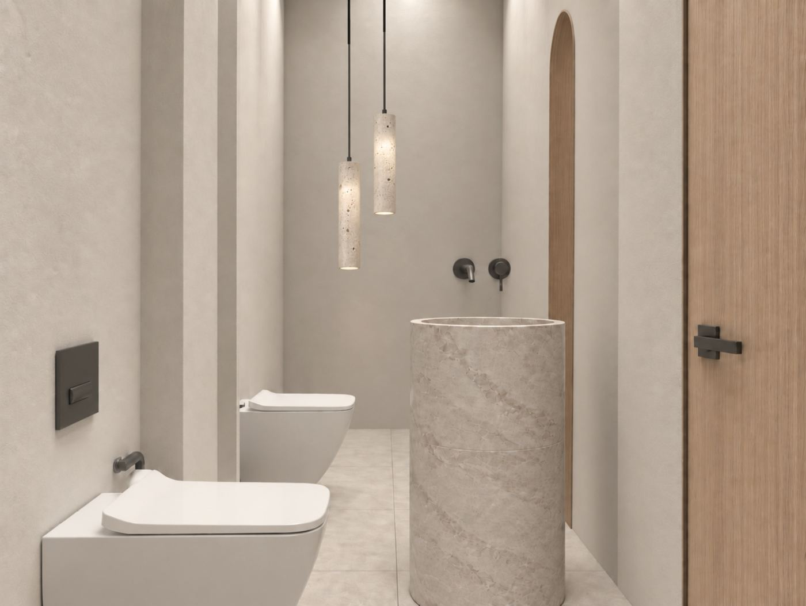
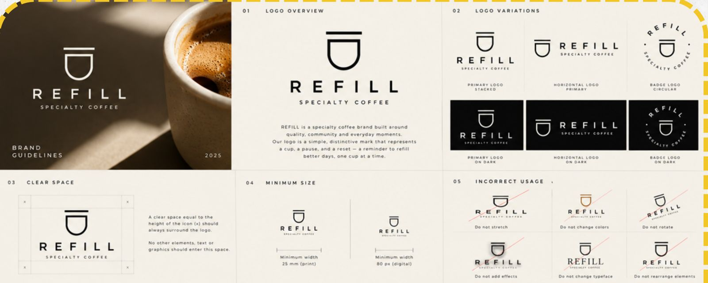

The space is already world class. The brand system has to catch up with it.
The renders show a calm, material-led room: limewash plaster, hand-cut stone, oak, olive planting and a long view over green. That is the level of a top specialty roaster. The guideline has the right instincts (restraint, a tracked wordmark, warm neutrals), but it describes two logo systems, two type systems and three palettes at once.
This study reads every page, names what to keep, and sets out one system that matches the room.
Drawn only from the guideline's own words. These are the lines every menu, post and cup should be checked against.
Simple language, no coffee jargon, direct and never exaggerated.
The interior is the strongest brand asset. Everything printed or posted should feel as if it was made from the same materials.





Walls, bar, planters. Reads warm grey in daylight, close to Plaster #F3EFE6.
Bar front, niches, hanging forms. The texture to borrow for packaging and print.
Chairs, tables, doors. Warmer than any swatch in the guideline.
Cushions and plants. The one accent.
Window frames, letters, fittings. Matches the logo black.
The guideline lists different colors on different pages. Below is one palette that resolves them, keeps every hex the agency already chose where possible, and matches the room.
Warm Taupe, Stone Beige and Light Greige share the same hue (about 30°) and saturation (about 20%). Only lightness changes: 55%, 66%, 70%. Stone Beige and Light Greige are 4 points apart, too close to tell apart on a cup or a screen.
Decision: drop Stone Beige. Keep Taupe and Greige.
The photoshoot and social pages both end in a deep coffee brown (sampled #352317 and #5C4233). A darker brown, sampled #78614F, also appears in the logo color variations. None of them is in a palette list, so every designer will pick a different one.
Decision: make Espresso #352317 official and retire the others.
The guideline sheet calls olive an accent, and the 3D renders use it on cushions and plants. It is also the only mid-tone that passes contrast with Plaster in both directions (5.64:1).
Decision: olive is the only accent. Use it once per layout.
WCAG 2.2: 4.5:1 for body text, 3:1 for large text (24px+, or 19px+ bold).
| Sample | Text on background | Ratio | Use for |
|---|---|---|---|
| Aa | Ink on Plaster | 16.94 | Any text |
| Aa | Espresso on Plaster | 13.03 | Any text |
| Aa | Ink on Greige | 9.35 | Any text |
| Aa | Ink on Taupe | 6.31 | Any text |
| Aa | Plaster on Olive | 5.64 | Any text |
| Aa | White on Taupe | 3.08 | Large text only |
| Aa | Taupe on Plaster | 2.69 | Never for text |
| Aa | White on Greige | 2.08 | Never for text |
The social grid's "GOOD COFFEE BETTER DAYS" tiles set white type on taupe. That holds at headline size only. The small caps captions on taupe need Ink or Espresso instead.
The wordmark is drawn in a geometric sans with wide tracking, so Montserrat is the right primary. Three other type choices in the files compete with it.
Page 2 shows a wordmark-only system. Page 3 adds a cup-arch icon. The renders use only the wordmark. Both can live together if each has a clear job.

Guideline page 3: the cup-arch system. Its clear-space rule (one icon height on all sides) and minimum sizes (25 mm print, 80 px digital) are sound and should be kept.
REFILL in Montserrat SemiBold, tracking +600, with SPECIALTY COFFEE beneath. It is already on the facade and the bar, so it is the brand's public face. Ink on light, Plaster on dark. No other color.
The cup-arch icon is the same shape as the arched door in the renders. Use it where the wordmark is too long: cup lids, sleeves, stamps, app icon, latte stencil, retail-bag seal, highlight covers.
Icon redrawn here as a reference sketch. Final artwork must come from the agency's master file.
Small errors are what separate a good local brand from a world-class one. Each of these is in the current files.
The olive bag, storefront and card on pages 6 and 7 read "REFILL COFFEE CO." The brand is REFILL SPECIALTY COFFEE.
Pages 2 and 3 present different primary logos. Adopt wordmark primary, arch secondary, and reissue one logo page.
A Cairo café needs bilingual menus, signage and receipts. No Arabic typeface, wordmark or rules exist yet.
Page 9 uses filled stock icons in a brown (#3E261B) that is not in the palette. Redraw as line icons at the arch's stroke weight, in Espresso.
"Shorouk, Cairo" in the files, "El-Shrouk" in conversation. Pick one spelling, for example El Shorouk, Cairo, and use it everywhere.
The renders show lowercase "menu" and "drinks" in a face that is not Montserrat. Set boards in the H4 label style, bilingual.
"GUIDELIINE" (cover), "STRUCTRUE" (p.9), "Offers Ads Direct, catchy, action-oriented /" (p.7) and "Feedback" icon under a "Reviews" title.
The yellow dashed frames and serif headings are BigBee's deck style. Keep them out of anything Refill-facing.
Brands like % Arabica, Blue Bottle and Aesop's retail stores share a few habits. Refill's room already has them. The rest of the brand should follow.
A single mark on the cup, the bag, the door and the app. For Refill: the arch.
The store's surfaces become the brand's textures. Photograph the stone, plaster and oak and use them as backgrounds on packaging and posts.
Mostly neutral, with a single color reserved for a few objects. For Refill: olive.
Lids, sleeves, receipts, wifi card, napkins, washroom signage, staff aprons. Nothing defaults to a supplier's template.
The first three unblock printing and signage. The rest raise the brand to the level of the room.
Wordmark primary, arch secondary, clear space and minimum sizes from page 3, colors limited to Ink and Plaster.
Plaster, Greige, Taupe, Olive, Espresso, Ink, with the contrast table above as the usage rule. Retire Stone Beige.
An Arabic wordmark drawn to match REFILL's geometry, a paired Arabic typeface, and bilingual menu and signage templates.
Remove "COFFEE CO." and script lettering, fix the spelling errors, rebuild the highlight icons.
Cup and lid, sleeve, bean bag, receipt, menu boards, wifi card, apron, wayfinding. Proof each against the renders.
Once built, photograph the stone, plaster and light at morning and golden hour. These images become the brand's textures.